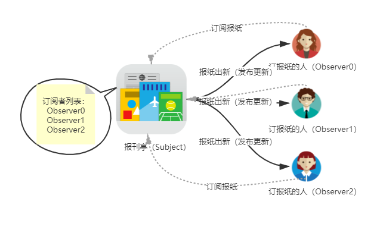

观察者模式
- 概念
观察者模式定义了对象间的一种一对多的依赖关系。当一个对象的状态发生改变时，所有依赖于它的对象都将得到通知，并完成自动更新。
优点
- 观察者与被观察者是抽象耦合的
- 建立了一套触发机制
缺点
- 被观察者有很多的观察者时，通知更新这一过程会花费很多的时间
- 观察者和被观察者之间存在循环依赖的话，可能导致系统奔溃
现实中的例子

从上图可以看到，一个 subject 可以被多个 observer 订阅/观察。当 subject 状态发生变化时，就会通知订阅者进行更新操作。在这样的一个模式中，订阅者的数量以及具体订阅者都是不确定的（订阅者列表是动态变化的），但仍能保证整个机制的正常运转。
Vue 的响应式原理
Vue2 实现响应式的核心是利用了 ES5 中的 Object.defineProperty 方法（这也是为什么 Vue.js 不能兼容 IE8 及以下版本浏览器的原因）。
Vue 会为每个组件实例都创建一个 watcher ，它会在组件渲染的过程中把“接触”过的数据属性记录为依赖（依赖收集）。之后当依赖项的 setter 触发时，会通知 watcher，从而使它关联的组件重新渲染（派发更新）。
代码实现上： 创建 Vue 实例时，会传入一个function / object 作为 data 属性。Vue 会遍历 data 属性所对应的对象的属性，并借助 Object.defineProperty 方法，进行数据劫持，将每个数据属性都转化为响应式对象（拥有setter和 getter）。
- 在 getter 方法中，进行依赖收集
- 在 setter 方法中，进行派发更新
简要分析源码中的观察者模式部分
说明： 下文分析的是 vue.js 2 的部分源码。
- 数据劫持，将数据属性转化为响应式对象
核心为
defineReactive方法 代码传送门
export function defineReactive(
obj: object,
key: string,
val?: any,
customSetter?: Function | null,
shallow?: boolean,
mock?: boolean,
observeEvenIfShallow = false
) {
const dep = new Dep()
const property = Object.getOwnPropertyDescriptor(obj, key)
if (property && property.configurable === false) {
return
}
// cater for pre-defined getter/setters
const getter = property && property.get
const setter = property && property.set
if (
(!getter || setter) &&
(val === NO_INITIAL_VALUE || arguments.length === 2)
) {
val = obj[key]
}
let childOb = shallow ? val && val.__ob__ : observe(val, false, mock)
Object.defineProperty(obj, key, {
enumerable: true,
configurable: true,
get: function reactiveGetter() {
const value = getter ? getter.call(obj) : val
if (Dep.target) {
if (__DEV__) {
dep.depend({
target: obj,
type: TrackOpTypes.GET,
key
})
} else {
dep.depend()
}
if (childOb) {
childOb.dep.depend()
if (isArray(value)) {
dependArray(value)
}
}
}
return isRef(value) && !shallow ? value.value : value
},
set: function reactiveSetter(newVal) {
const value = getter ? getter.call(obj) : val
if (!hasChanged(value, newVal)) {
return
}
if (__DEV__ && customSetter) {
customSetter()
}
if (setter) {
setter.call(obj, newVal)
} else if (getter) {
// #7981: for accessor properties without setter
return
} else if (!shallow && isRef(value) && !isRef(newVal)) {
value.value = newVal
return
} else {
val = newVal
}
childOb = shallow ? newVal && newVal.__ob__ : observe(newVal, false, mock)
if (__DEV__) {
dep.notify({
type: TriggerOpTypes.SET,
target: obj,
key,
newValue: newVal,
oldValue: value
})
} else {
dep.notify()
}
}
})
return dep
}
- 依赖收集 依赖收集从 getter 中的 dep.depend() 方法说起，下面是 Dep 类中的 depend 方法的实现： 代码传送门
depend(info?: DebuggerEventExtraInfo) {
if (Dep.target) { // Watcher
Dep.target.addDep(this)
if (__DEV__ && info && Dep.target.onTrack) {
Dep.target.onTrack({
effect: Dep.target,
...info
})
}
}
}
其中调用了 Watcher 实例中的 addDep 方法： 代码传送门
addDep(dep: Dep) {
const id = dep.id
if (!this.newDepIds.has(id)) {
this.newDepIds.add(id)
this.newDeps.push(dep)
if (!this.depIds.has(id)) {
dep.addSub(this)
}
}
}
- 派发更新 派发更新从 setter 中的 dep.notify() 说起，下面是 Dep 类中的 notify 方法的实现： 代码传送门
notify(info?: DebuggerEventExtraInfo) {
// stabilize the subscriber list first
const subs = this.subs.filter(s => s) as DepTarget[] // 克隆subs数组
if (__DEV__ && !config.async) {
// subs aren't sorted in scheduler if not running async
// we need to sort them now to make sure they fire in correct
// order
subs.sort((a, b) => a.id - b.id)
}
for (let i = 0, l = subs.length; i < l; i++) {
const sub = subs[i]
if (__DEV__ && info) {
sub.onTrigger &&
sub.onTrigger({
effect: subs[i],
...info
})
}
sub.update() // 调用watcher的update方法
}
}
其中调用了 watcher 实例中的 update 方法： 代码传送门
update() {
/* istanbul ignore else */
if (this.lazy) {
this.dirty = true
} else if (this.sync) {
this.run()
} else {
queueWatcher(this)
}
}
- 简易实现 源码中考虑的情况比较多，看起来比较复杂。为了便于理解观察者模式使用的核心思想，可以暂时忽略分支逻辑，只查看主要的逻辑。下面的代码，就是忽略各种分支情况后，最最简单的一个实现
class Watcher {
constructor(vm, expr, callback) {
this.vm = vm;
this.expr = expr;
this.callback = callback;
this.oldValue = this.get();
}
get() {
Dep.target = this;
let value = CompileUtil.getValue(this.vm, this.expr);
Dep.target = null;
return value;
}
update() {
let newValue = CompileUtil.getValue(this.vm, this.expr)
if (this.oldValue !== newValue) {
this.callback(newValue)
}
}
}
// 发布/订阅
class Dep {
constructor() {
// 存储所有的观察者
this.subs = [];
}
// 订阅
addSub(watcher) {
this.subs.push(watcher);
}
// 发布
notify() {
this.subs.forEach((watcher) => {
watcher.update()
})
}
}
// 实现数据劫持
// 观察类 将传入的数据的定义都改为 defineProperty 的方式
class Observer {
constructor(data) {
this.observe(data);
}
observe(data) {
if (data && typeof data === 'object') {
for (let key in data) {
this.defineReactive(data, key, data[key]);
this.observe(data[key]);
}
}
}
defineReactive(obj, key, value) {
this.observe(value);
let dep = new Dep();
Object.defineProperty(obj, key, {
get() {
// 添加观察者
Dep.target && dep.addSub(Dep.target);
return value;
},
set: (newValue) => {
if (newValue !== value) {
// 将新值转为 get set 形式后再进行赋值
this.observe(newValue);
value = newValue;
// 通知观察者
dep.notify();
}
}
})
}
}